Schema Comparison Tool allows you to compare tables, views, functions, stored procedures and other database objects between two schemas/databases. It will report any discrepancies between schemas such as missing or mismatching stored procedures, tables, table columns, indexes and constraints. It also will detect column discrepancies in the column data type, identity, nullability and default value. Comparison can be done between schemas on two identical DBMS platforms or two different DBMS platforms such as Oracle and SQL Server.
You can invoke the Schema Comparison Tool from the 'Tools' menu in the main toolbar of DB Solo.
The first screen of the comparison tool allows you to select the schemas/databases to compare as well as individual objects within the selected schema. The database/schema to be compared can be either on a database server or a previously saved snapshot of a database/schema.
To compare a database or schema on a live database server, select the 'Database/Schema' tab under 'Source' or 'Destination'. The tree control on the left hand side allows you to select 'source' database/schema of the comparison and the right side lets you pick the 'destination' database/schema.
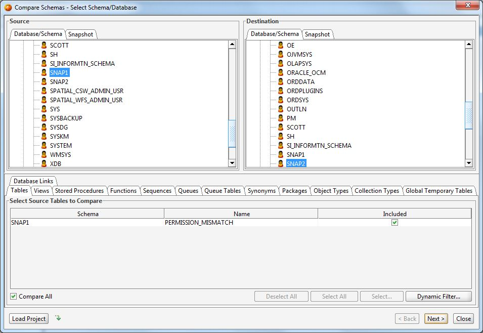
Figure - Select Schema/Database
To compare a database or schema that you have previously saved to a snapshot file, select the 'Snapshot' tab under 'Source' or 'Destination'.
To open a previously saved snapshot file, click on the file folder icon and point to the file on your hard drive.
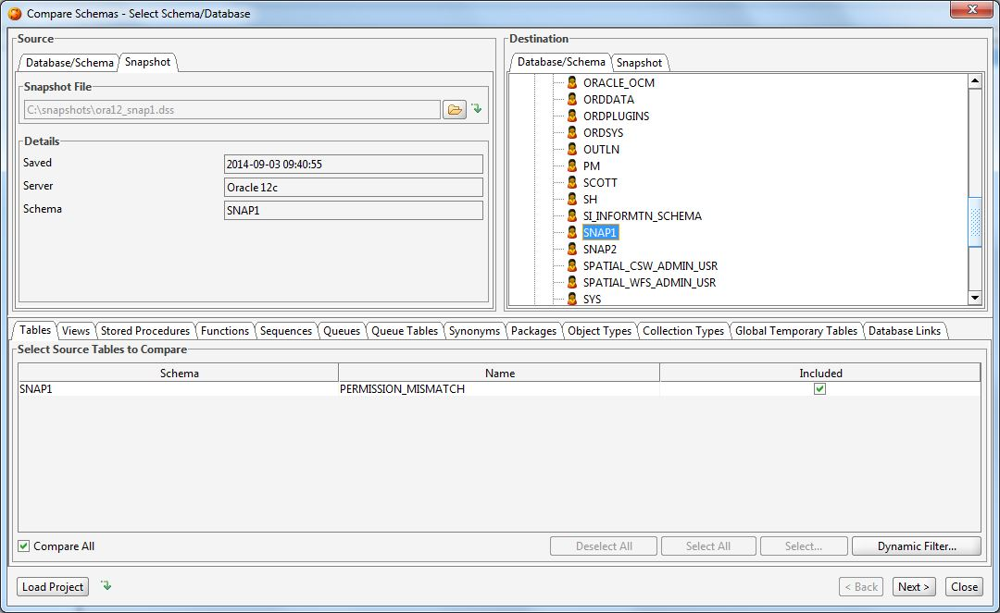
Figure - Select Snapshot
After selecting the source schema/database from an active database server or a snapshot file, you can select individual objects to compare within that schema. Comparable objects include Tables, Views, Functions, Stored Procedures, etc. By default all of these objects will be compared in the selected schemas/databases. The tabbed window at the bottom of the first screen allows you to hand-pick objects to compare. To do so, uncheck the 'Compare All' checkbox and check/uncheck the items you wish to compare.
After selecting the schemas/databases and the associated objects to compare, click on 'Next' to move to the settings panel.
You can save a database/schema to a snapshot file either on the first page of the Schema Compare Tool or on the last results page.
To save a database/schema on the first page of the tool, select the desired database/schema in the tree control and right-click on it and select the 'Save' option. This will bring up a dialog where you can select the location of the snapshot file as well as options related to the saved snapshot.
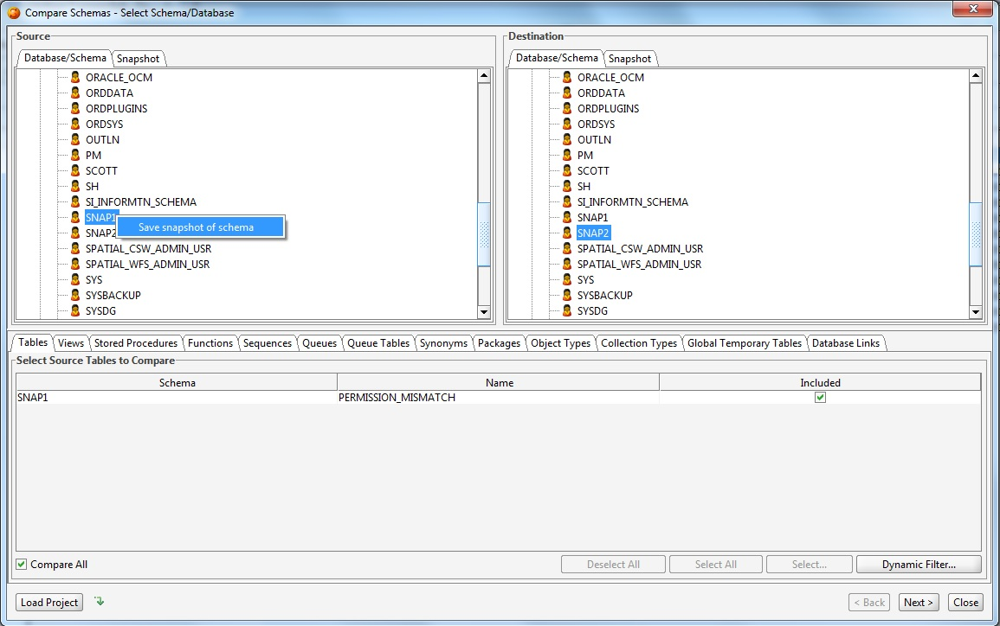
To save a database/schema on the results page of the tool, click on the Save-button highlighted in the picture below.
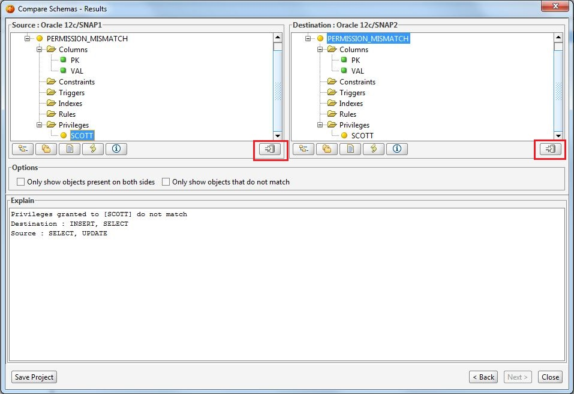
The various tabs in the settings screen allow you to fine-tune the comparison process. All settings will get persisted when you close DB Solo, so you don't have to re-enter the same settings next time you want to run the comparison. There is a separate tab for each group of objects to compare.
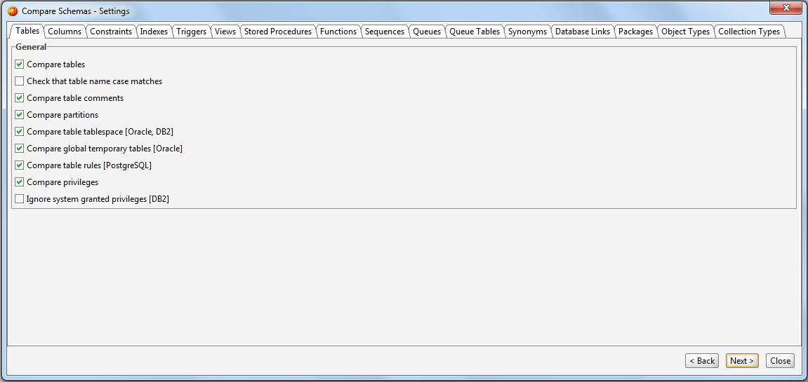
Figure - Column Comparison Settings
After applying all the settings you wish to change, click on 'Next' to start the comparison. Notice that if the number of objects to compare is large , the comparison may potentially take several minutes to complete.
After DB Solo has completed the comparison process, you will see the results presented as two tree controls. Again, the left side is the 'source'
schema/database and the right one is the 'destination' schema/database.
The trees will contain all objects that were compared, unless the 'Only show objects present on both sides' checkbox is checked. In that case, the trees will only
contain objects that were found in both schemas/databases.
When you select an object in either tree control, the 'Explain' panel at the bottom of the screen will give more details regarding the comparison results for the
selected object. In the figure below, the data types of the selected column do match in the source and destination schemas, as indicated in the detail panel.
Each node in the tree controls is colored using the following coloring scheme.
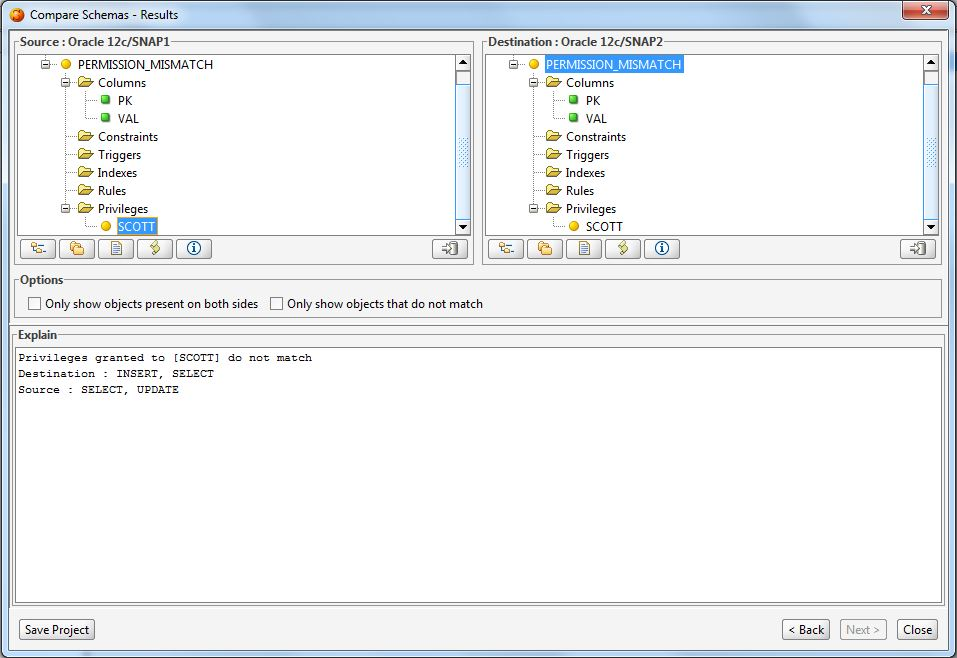
Figure - Results Panel
Below each tree control are buttons that allow you to:
By clicking on the 'View Results as Text' button you can study the comparison results in a text window. This allows you to copy the results to system clipboard or save them into a file. If the appropriate checkbox was selected on the first screen, there will be a short summary section at the top of the results. The output of the text-based results is either regular text, XML or HTML.
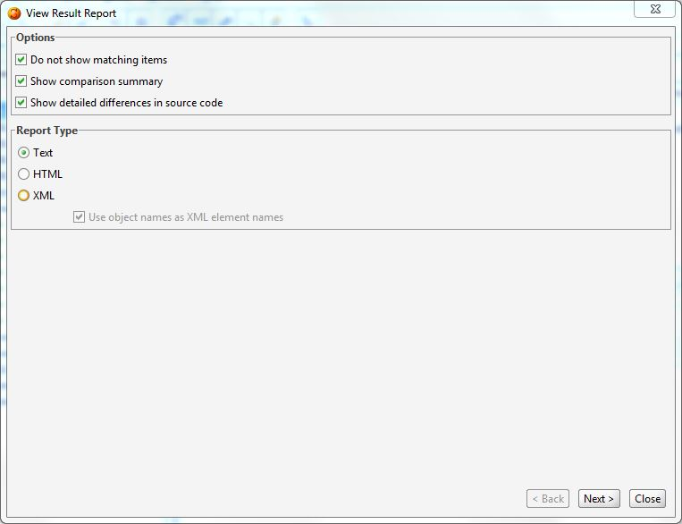
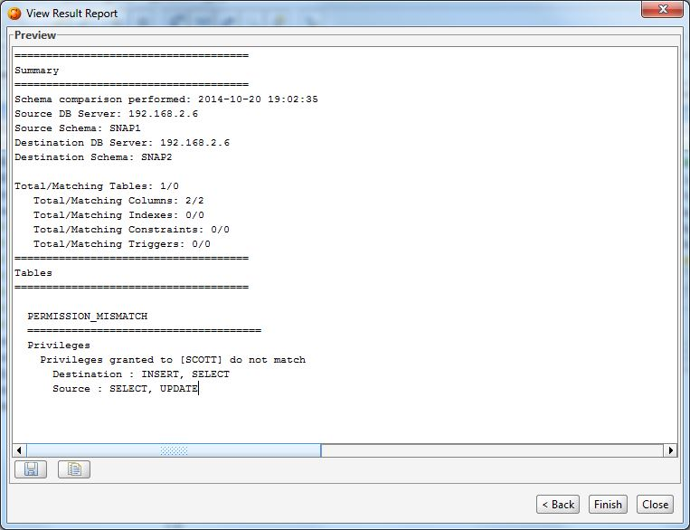
Figure - Viewing Results as Text
The schema comparison tool has a Synchronization Script creator which allows you to create a DDL script that contains all required SQL statements to synchronize the schema or database you compared. If you generate the script for the source side, it will contain SQL statements that will make the source schema identical with the destination schema.
By clicking the Create Synchronize Script button on either side, you can invoke the Schema Synchronization Wizard Dialog.
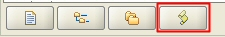
The first screen of the dialog allows you to change the script generation settings. The settings are divided into three categories under three tabs. The first tab allows you to select the objects to be included in the sync script. You can include/exclude objects based on its type or the type of the mismatch.
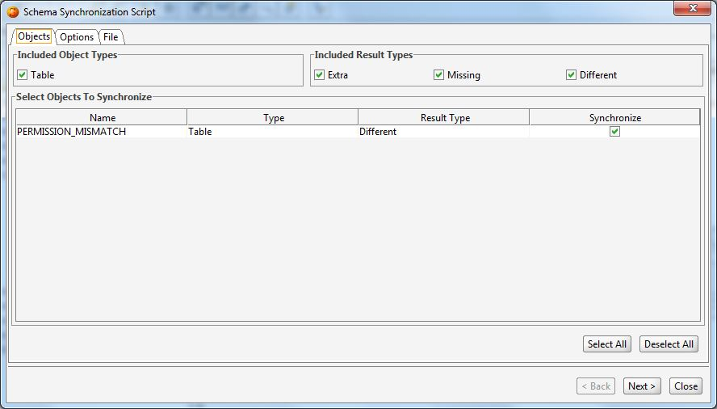
The second tab allows you to control the output of the script generation tool. For example you can change the case of the SQL statements, the statement separator type and whether identifiers are shown in brackets, quotes or neither. Notice that these settings will not affect the source code of views, stored procedures or functions as they are not parsed by the tool. You can also select if you wish to have comments or warnings in the output DDL script.
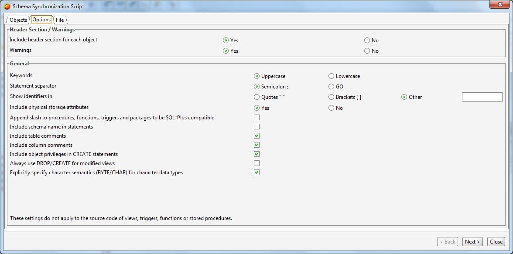
The third tab allows you to control the file encoding and newline type of the generated SQL script. This is applicable to SQL files produced by the command line version of the schema comparison tool, i.e. it has no effect on the script generated in the GUI mode.
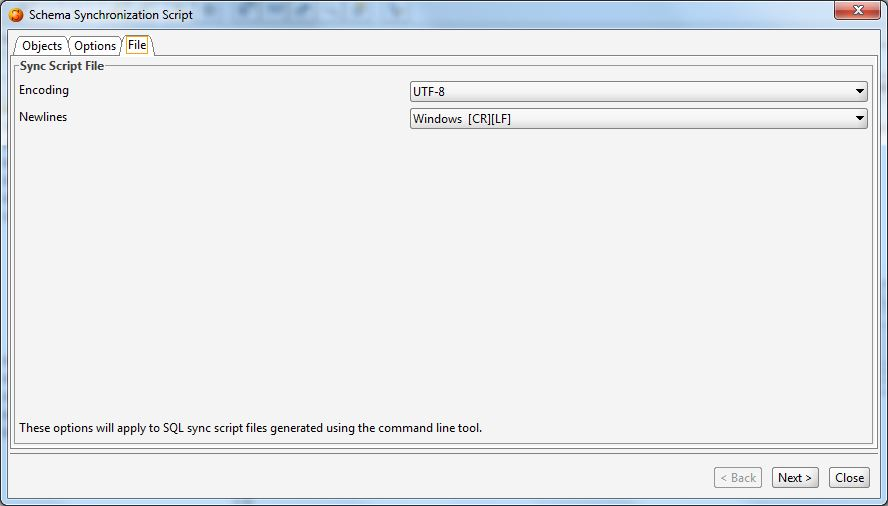
The last page of the Synchronization Script Wizard will show the DDL script based on the schema comparison results and your settings. The buttons on this screen let you save the script to a file or copy it to the system clipboard.
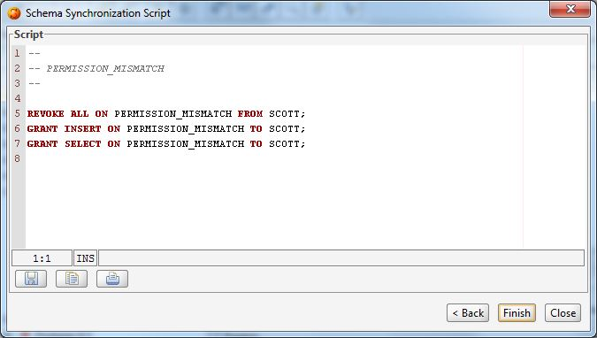
The 'Load Project' button on the first page of the comparison tool allows you to open projects you have saved earlier. The project files contain information about the source / destination databases you have selected, objects you selected for comparison as well as all the comparison settings from the second page of the tool.
After completing a schema comparison, you can save your settings on the last page of the comparison tool. Clicking on the 'Save Project' button will bring up the 'Save Schema Comparison Project' dialog where you can select a file name for your project file as well as define the names of the comparison results' output files.
The first section of the page titled 'Project File' lets you select the name of the project file.
The second section of the screen contains fields for setting the file names for text-based results.
The third section contains fields for selecting the names of the synchronization DDL script files.
Notice that you must specify at least one output file for the command line comparison tool.
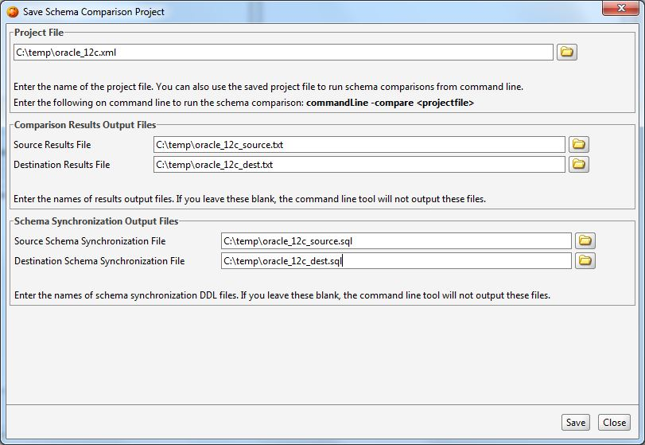
Schema comparison can be run from a command shell using settings from a saved project file. This allows you to run schema comparisons regularly using cron or a similar mechanism. The following shell command will run a schema comparison from settings in 'myproject.xml':
commandLine -compare myproject.xml
where 'myproject.xml' is a project file. You can use project files on different machines as long as the configured server connection names match. The project files are xml text files that can be edited manually outside DB Solo.
The command line tool will output errors and other messages in compare.log file.
| Back to Index |
DB Solo www.dbsolo.com support@dbsolo.com |